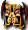
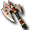
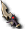
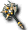
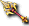
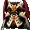
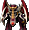
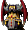
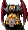

阿瑟拉
阿瑟拉
我們伺服器實際的怪物設定（不是日版 wiki 的資料）。
能力值
| 項目 | 本伺服器 | 日版 wiki |
| 等級 | 74 | 120 |
| HP | 407056～468114 | 20,680,000 |
| AC | -60 | 0 |
| MC | -40 | 10 |
| AAR | 20 | 70 |
| SAR | 50 | 15 |
| STR | 81 | 200 |
| DEX | 41 | 130 |
| INT | 21 | 160 |
| WIS | 21 | 200 |
| CON | 81 | 140 |
| 經驗值 | 0 | - |
| 名聲值 | 0 | - |
| 金錢 | 428480～449904 | 800000 |
| 攻擊屬性 | 隨機 | 隨機 |
| 防禦屬性 | 隨機 | 隨機 |
出現地圖
| 地圖 | 數量 | 出現位置 |
| 露米娜獎勵關3 | 1 | 定點 (50,50) |
掉落物品
| 道具 | 基本機率 |
| 露米娜之寶珠(大) | 100% |
 格亨納之板甲 格亨納之板甲 | 0.15% |
 格亨納之守護甲 格亨納之守護甲 | 0.15% |
| 格亨納之精煉衣 | 0.15% |
 格亨納之女法衣 格亨納之女法衣 | 0.15% |
 格亨納之女聖袍 格亨納之女聖袍 | 0.15% |
| 格亨納之女守護甲 | 0.15% |
 阿納西斯 阿納西斯 | 0.15% |
 阿納西斯 阿納西斯 | 0.15% |
 海馬騎士召喚捲軸 海馬騎士召喚捲軸 | 0.25% |
 活動紀念幣 活動紀念幣 | 30% |
| 隨機一件（JpsBossBox） | 3% |
| 格亨納之劍卡 | 2.29% |
| 格亨納之魔法卡組 | 2.28% |
| 格亨納之彎刀 | 4.57% |
| 格亨納之精煉衣 | 4% |
| 格亨納之拉皮內斯 | 4% |
 格亨納之法札德 | 4% |
 格亨納之卡夫坦 格亨納之卡夫坦 | 4% |
 格亨納之護膝寶珠 格亨納之護膝寶珠 | 10% |
| 格亨納之戒指寶珠 | 10% |
| 格亨納之武器寶珠 | 1.5% |
 格亨納之神聖寶珠 格亨納之神聖寶珠 | 3% |
| 露米娜結晶 | 1% |
| 格亨納之腰帶 | 4% |
| 格亨納之劍 | 2.29% |
 格亨納之斧 | 2.28% |
 格亨納之短劍 | 2.29% |
 格亨納之鞭(雙手) 格亨納之鞭(雙手) | 2.28% |
| 格亨納之珠(雙手) | 4.57% |
 格亨納之杖(雙手) | 4.57% |
| 格亨納之指虎 | 4.57% |
 格亨納之吉他(雙手) 格亨納之吉他(雙手) | 1.52% |
| 格亨納之豎琴(雙手) | 1.53% |
 格亨納之鼓(雙手) 格亨納之鼓(雙手) | 1.52% |
 格亨納之槍(單手) | 2.29% |
| 格亨納之槍(雙手) | 2.28% |
| 格亨納之戰盔 | 4% |
| 格亨納之女戰盔 | 4% |
| 格亨納之法帽 | 4% |
| 格亨納之女法帽 | 4% |
 格亨納之板甲 格亨納之板甲 | 4% |
 格亨納之女板甲 | 4% |
| 格亨納之緊身衣 | 4% |
 格亨納之女緊身衣 | 4% |
| 格亨納之法衣 | 4% |
 格亨納之女法衣 格亨納之女法衣 | 4% |
| 格亨納之聖袍 | 4% |
| 格亨納之女聖袍 | 4% |
 格亨納之武服 | 4% |
 格亨納之女武服 | 4% |
 格亨納之外袍 格亨納之外袍 | 4% |
| 格亨納之女外袍 | 4% |
| 格亨納之守護甲 | 4% |
 格亨納之女守護甲 格亨納之女守護甲 | 4% |
基本機率再乘上伺服器的掉寶倍率；「隨機一件」是從一組道具裡抽一件。